Missing Data
(adapted from slides by Jason Geller and Richard McElreath)
PSY504, Advanced Statistics in Psychology
Princeton University
2026-04-20
Overview
By the end of this lecture, you should be able to:
- Classify missing data mechanisms (MCAR, MAR, NMAR)
- Diagnose missingness in your own datasets
- Apply appropriate methods depending on the mechanism
- Report your missing data strategy clearly
Today
MCAR, MAR, NMAR
Screening data for missingness
Diagnosing missing data mechanisms in R
Missing data methods in R
- Listwise deletion
- Casewise deletion
- Nonconditional and conditional imputation
- Multiple imputation
- Maximum likelihood
Reporting
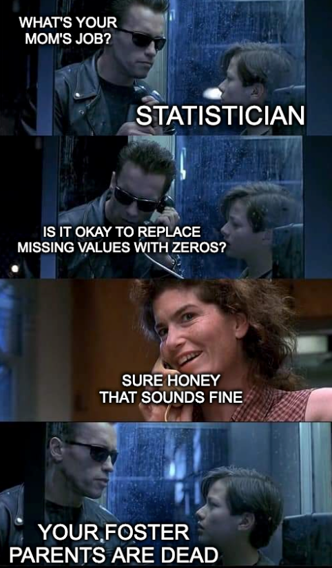
Discuss
Have you ever had to deal with missing data in your studies or in your dataset?
What caused it?
How did you deal with it?
Packages
- QMD available in: https://github.com/suyoghc/PSY504_Spring_2026/tree/main/posts
Missing Data Mechanisms
Rubin’s Framework
Rubin proposed we can divide any data set \(Y\) into two components:
- \(Y_\text{obs}\) the observed values
- \(Y_\text{mis}\) the missing values
\[Y = Y_\text{obs} + Y_\text{mis}\]

Every analysis implicitly assumes something about \(Y_\text{mis}\). This decomposition forces that assumption into the open.
Missing data mechanisms
Mechanisms describe how missingness relates to the data
Mechanisms function as statistical assumptions
This framework is the theoretical backbone for accounting for missing data
Dog & Homework example (3 mechanisms)
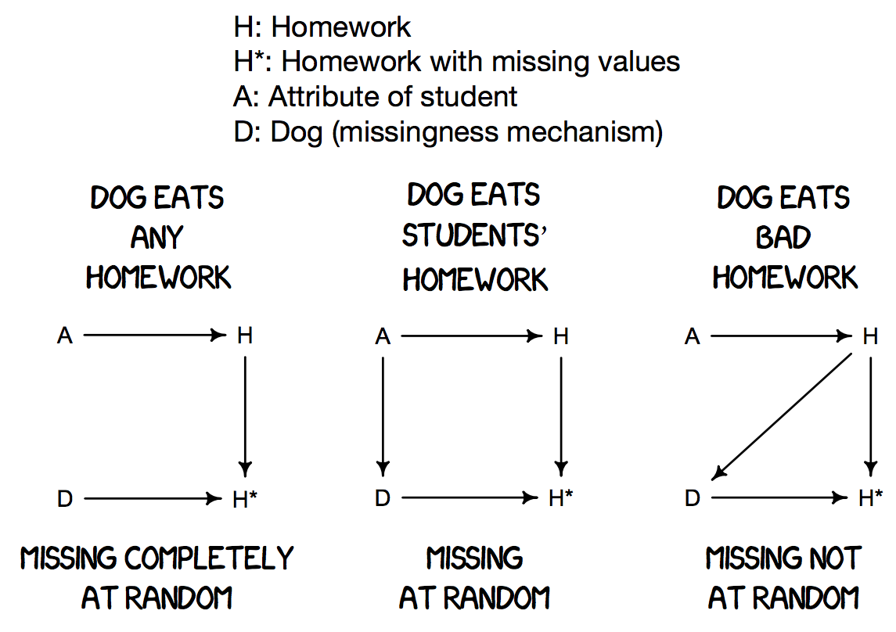
The critical question: what determines whether data goes missing?
Missing completely at random (MCAR)
Dog eats homework randomly
No relationship between missingness and any values
Loss of precision, but usually no bias
Complete-case analysis (= listwise deletion) is valid
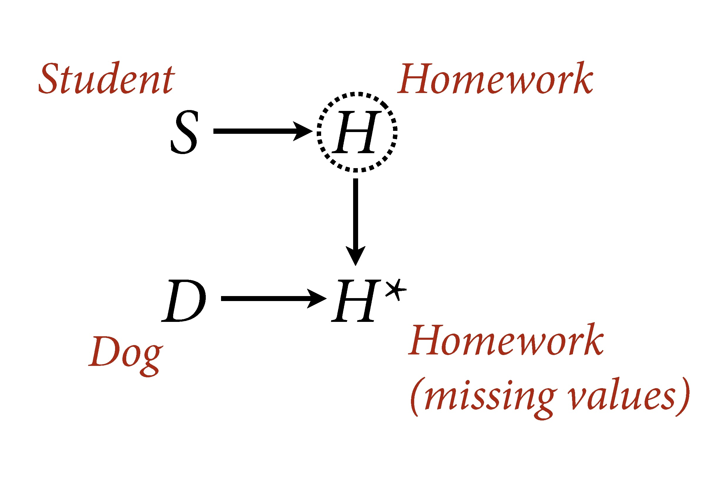
The cause may be known (e.g., coffee spilled on questionnaires) – what matters is that the cause is unrelated to any variable in the data.
MCAR visualized
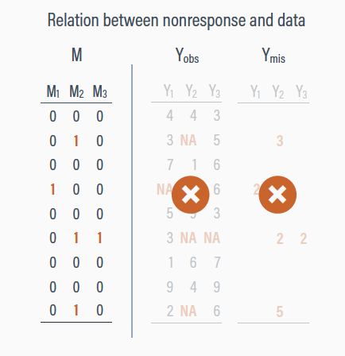
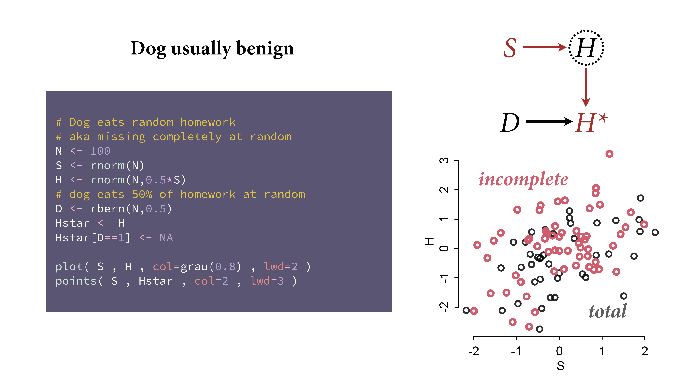
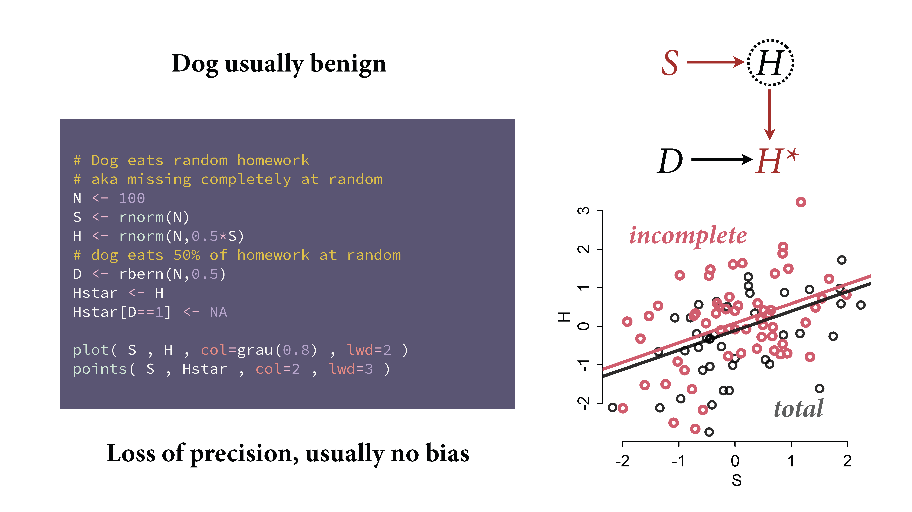
Conditionally missing at random (CMAR)
Missingness depends on observed data
Dog eats conditional on cause of homework
Valid inference if we condition correctly
The name “Missing at Random” is misleading: missingness is not random unconditionally, only after conditioning on observed variables
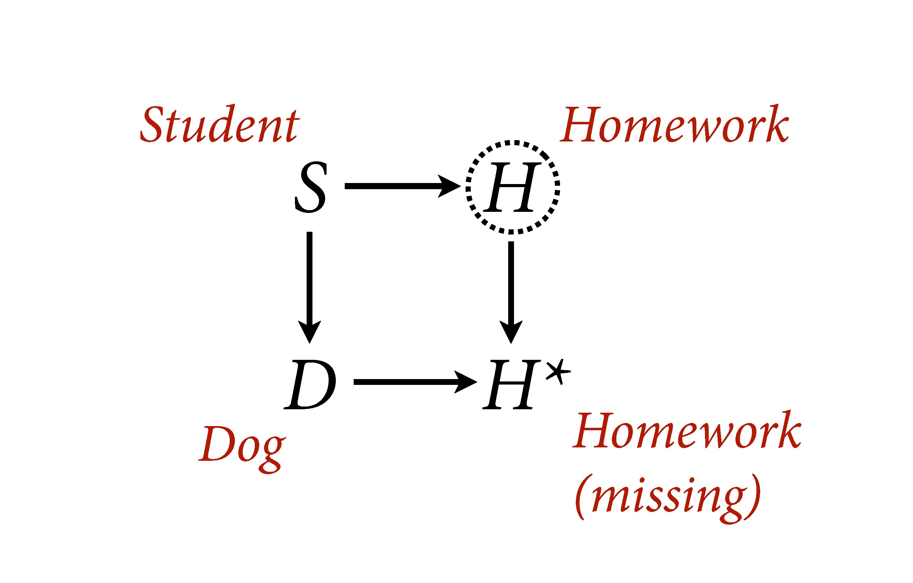
CMAR: Simulation evidence
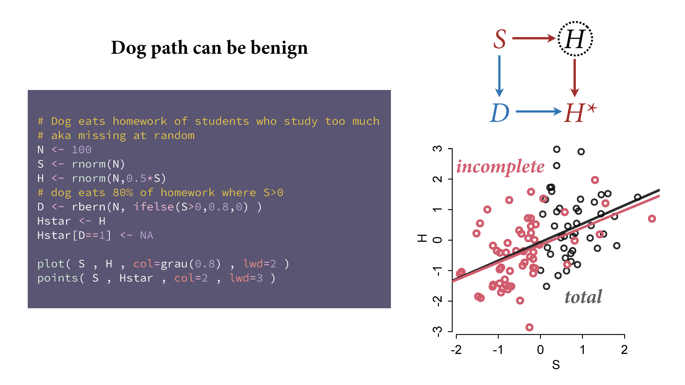
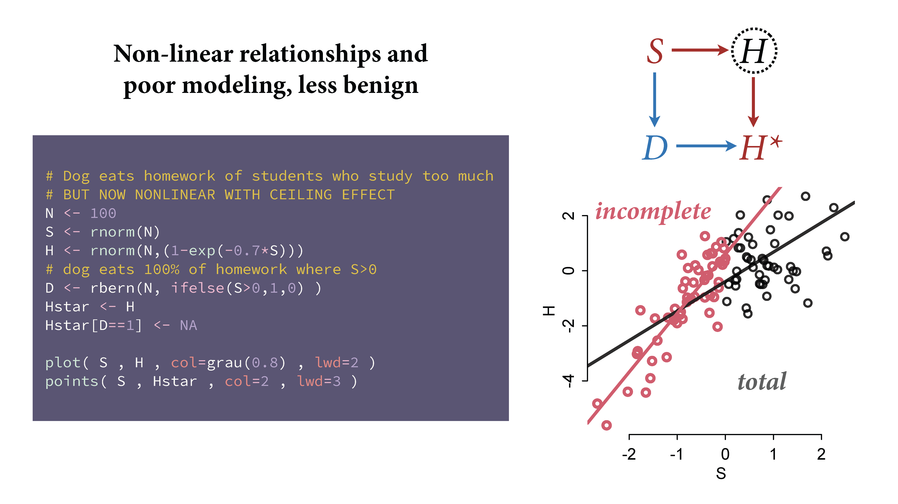
CMAR visualized
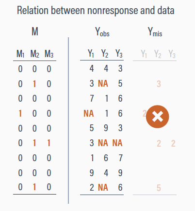
Sometimes the missingness-predictor relationship is nonlinear
Poor modeling of MAR can still lead to bias
MI and ML handle this because they model the joint distribution
Not missing at random (NMAR)
Missingness depends on the missing values themselves
Dog eats conditional on homework itself
Produces bias in standard analyses
The missingness pattern is informative: who is missing tells you something about the values that are missing
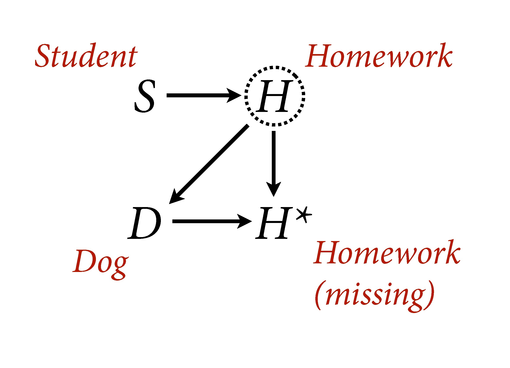
NMAR visualized
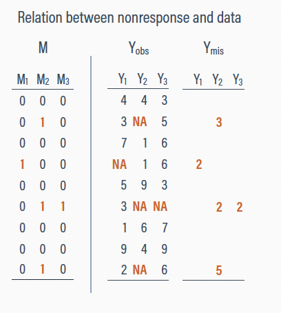
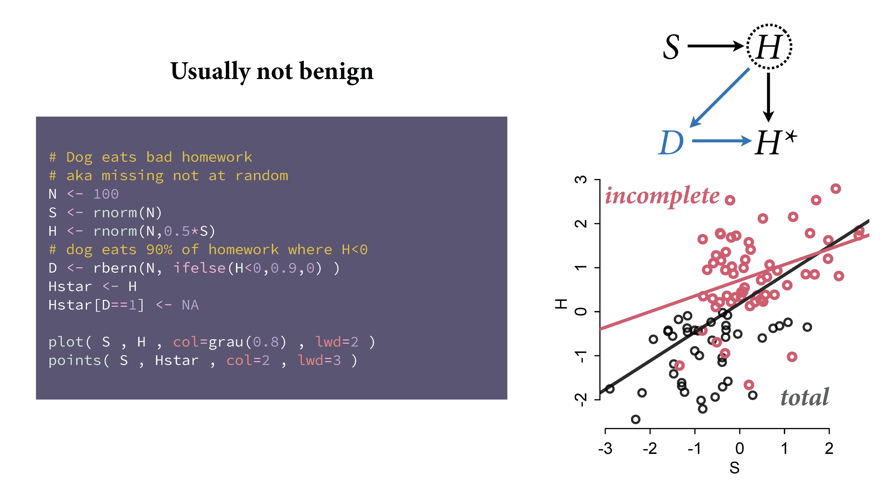
Workflow for Missing Data
Three steps
Identify missing data (and how much)
Diagnose the mechanism (MCAR? MAR? NMAR?)
Account for missingness:
- Deletion (not recommended)
- Imputation
- Maximum likelihood
- Bayesian methods (model observed + missing jointly)
Data
Chronic pain example
Enders (2023): N = 275, psychological correlates of chronic pain
- Depression (
depress) and perceived control (control)
- Depression (
Perceived control is complete; depression scores are missing
Note
Dataset manipulated so missingness is related to control (low control = missing depression). MAR by construction.
Loading the data
dat <- read.table("https://raw.githubusercontent.com/jgeller112/PSY504-Advanced-Stats-S24/main/slides/03-Missing_Data/APA%20Missing%20Data%20Training/Analysis%20Examples/pain.dat", na.strings = "999")
names(dat) <- c("id", "txgrp", "male", "age", "edugroup", "workhrs", "exercise", "paingrps",
"pain", "anxiety", "stress", "control", "depress", "interfere", "disability",
paste0("dep", seq(1:7)), paste0("int", seq(1:6)), paste0("dis", seq(1:6)))
dat <- dat %>%
select("id", "age", "control", "depress", "stress") %>%
mutate(depress=ifelse(depress==999, NA, depress)) %>%
mutate(r_mar_low = ifelse(control < 15.51, 1, 0)) %>%
mutate(depress = ifelse(r_mar_low == 1, NA, depress)) %>%
select(-r_mar_low)| id | age | control | depress | stress |
|---|---|---|---|---|
| 1 | 68 | 13 | NA | 5 |
| 2 | 38 | 19 | 28 | 7 |
| 3 | 31 | 20 | 8 | 4 |
| 4 | 31 | 17 | 28 | 7 |
| 5 | 58 | 22 | 12 | 3 |
| 6 | 63 | 26 | 13 | 5 |
| 7 | 38 | 16 | 23 | 5 |
| 8 | 54 | 30 | 12 | 1 |
| 9 | 66 | 20 | 9 | 3 |
| 10 | 31 | 27 | NA | 2 |
EDA
- What variables have missing data? How much?
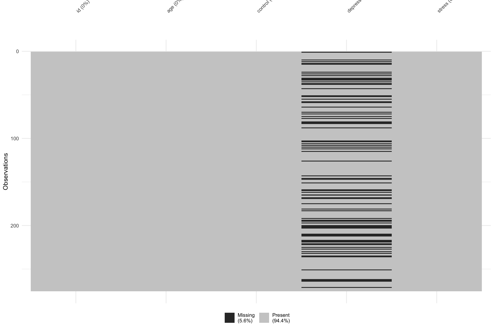
EDA: Summary statistics
| skim_type | skim_variable | n_missing | complete_rate | numeric.mean | numeric.sd | numeric.p0 | numeric.p25 | numeric.p50 | numeric.p75 | numeric.p100 | numeric.hist |
|---|---|---|---|---|---|---|---|---|---|---|---|
| numeric | id | 0 | 1.00 | 138.000000 | 79.529869 | 1 | 69.5 | 138 | 206.5 | 275 | ▇▇▇▇▇ |
| numeric | age | 0 | 1.00 | 45.643636 | 11.271221 | 19 | 38.0 | 46 | 53.0 | 78 | ▂▇▇▃▁ |
| numeric | control | 0 | 1.00 | 20.763636 | 5.252610 | 6 | 17.0 | 21 | 25.0 | 30 | ▁▃▇▇▅ |
| numeric | depress | 77 | 0.72 | 14.303030 | 6.058018 | 7 | 9.0 | 13 | 18.0 | 28 | ▇▆▂▂▂ |
| numeric | stress | 0 | 1.00 | 3.901818 | 1.802623 | 1 | 3.0 | 4 | 5.0 | 7 | ▇▅▇▅▆ |
Missing patterns
Types of missing patterns
Univariate: one variable with missing data
Monotone: if variable j is missing, all subsequent are too
- Common in longitudinal dropout
Non-monotone: scattered, no systematic ordering
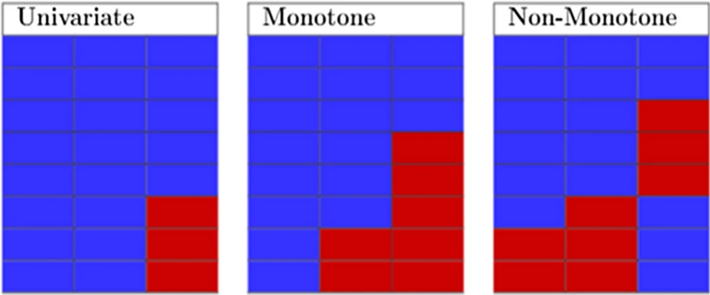
Is it MCAR or MAR?
Little’s MCAR test
Little’s test: \(\chi^2\) statistic
- Significant = not MCAR
- Not significant = consistent with MCAR
- Not used much anymore!
Visual diagnostics
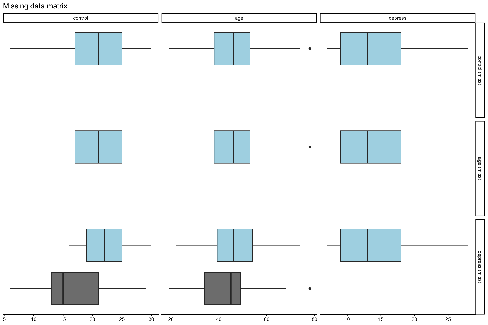
Dummy variable approach
- Create binary indicator: 1 = missing, 0 = observed
- If related to other variables, evidence for MAR
Testing
| term | estimate | std.error | statistic | p.value |
|---|---|---|---|---|
| (Intercept) | 22.348485 | 0.3270999 | 68.323107 | 0 |
| depress_1 | -5.660173 | 0.6181608 | -9.156474 | 0 |
- Missing on depression is related to control!
Methods for MCAR
Listwise deletion
Listwise deletion: pros and cons
Pros: unbiased if MCAR
Cons: can lose substantial data; biased if not MCAR
Casewise (pairwise) deletion
Delete only observations where the missing data is relevant to that specific comparison
Pros: preserves more data; unbiased under MCAR
Cons: each statistic uses a different subset; can produce non-positive-definite covariance matrices
Methods for MAR
Unconditional (mean) imputation – Bad
- Replace missing values with the mean of observed values
Conditional imputation (regression)
Stochastic Regression
Adds a random residual to predicted values
More realistic standard errors
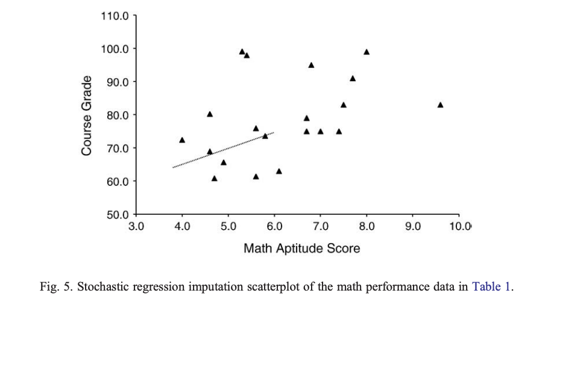
Multiple Imputation
The idea
Use multiple plausible values instead of one “best guess”
Creates m completed datasets, each with different imputed values
Captures uncertainty about what the missing values might have been
Step 1: Impute
Create m imputed datasets with mice()

Step 2: Analyze
Fit your model to each dataset with with()

Step 3: Pool
Combine results with pool() using Rubin’s rules

Multiple Imputation summary
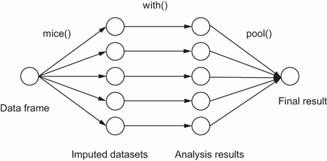
Connection to the Bootstrap
Both generate multiple datasets, analyze each separately, pool results
Bootstrap: “what if we’d drawn a different sample?”
MI: “what if the missing values had been different?”
1. Impute with mice
List of 23
$ data :'data.frame': 275 obs. of 5 variables:
$ imp :List of 5
$ m : num 5
$ where : logi [1:275, 1:5] FALSE FALSE FALSE FALSE FALSE FALSE ...
..- attr(*, "dimnames")=List of 2
$ blocks :List of 5
$ call : language mice(data = dat, m = m, method = "pmm", printFlag = FALSE, seed = 24415)
$ nmis : Named int [1:5] 0 0 0 77 0
..- attr(*, "names")= chr [1:5] "id" "age" "control" "depress" ...
$ method : Named chr [1:5] "" "" "" "pmm" ...
..- attr(*, "names")= chr [1:5] "id" "age" "control" "depress" ...
$ predictorMatrix: num [1:5, 1:5] 0 1 1 1 1 1 0 1 1 1 ...
..- attr(*, "dimnames")=List of 2
$ visitSequence : chr [1:5] "id" "age" "control" "depress" ...
$ formulas :List of 5
$ calltype : Named chr [1:5] "pred" "pred" "pred" "pred" ...
..- attr(*, "names")= chr [1:5] "id" "age" "control" "depress" ...
$ post : Named chr [1:5] "" "" "" "" ...
..- attr(*, "names")= chr [1:5] "id" "age" "control" "depress" ...
$ blots :List of 5
$ ignore : logi [1:275] FALSE FALSE FALSE FALSE FALSE FALSE ...
$ seed : num 24415
$ iteration : num 5
$ lastSeedValue : int [1:626] 10403 359 1009391010 -1973990381 908174720 -738124646 251387381 -1899514340 395796544 1088258267 ...
$ chainMean : num [1:5, 1:5, 1:5] NaN NaN NaN 16.8 NaN ...
..- attr(*, "dimnames")=List of 3
$ chainVar : num [1:5, 1:5, 1:5] NA NA NA 47.1 NA ...
..- attr(*, "dimnames")=List of 3
$ loggedEvents : NULL
$ version :Classes 'package_version', 'numeric_version' hidden list of 1
$ date : Date[1:1], format: "2026-04-20"
- attr(*, "class")= chr "mids"1. Impute with mice (cont.)
List of 5
$ id :'data.frame': 0 obs. of 5 variables:
$ age :'data.frame': 0 obs. of 5 variables:
$ control:'data.frame': 0 obs. of 5 variables:
$ depress:'data.frame': 77 obs. of 5 variables:
$ stress :'data.frame': 0 obs. of 5 variables: 1 2 3 4 5
1 28 26 18 21 13
10 12 7 8 14 8
12 19 23 10 11 27
14 24 27 20 21 27
15 19 14 15 14 12
24 26 13 8 13 12PMM
Predictive mean matching
- Fit regression on observed data
- Predict mean for the missing case
- Find “donor” cases with closest predicted means
- Use a donor’s actual observed value
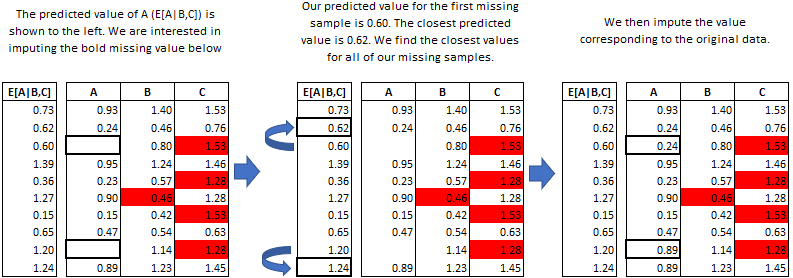
2. Model with mice
| term | estimate | std.error | statistic | p.value | nobs | df.residual |
|---|---|---|---|---|---|---|
| (Intercept) | 26.5853480 | 1.3951117 | 19.056071 | 0 | 275 | 273 |
| control | -0.5579633 | 0.0651453 | -8.564900 | 0 | 275 | 273 |
| (Intercept) | 26.3445428 | 1.4404262 | 18.289409 | 0 | 275 | 273 |
| control | -0.5397109 | 0.0672613 | -8.024091 | 0 | 275 | 273 |
| (Intercept) | 24.9087161 | 1.4261998 | 17.465096 | 0 | 275 | 273 |
| control | -0.4880730 | 0.0665970 | -7.328753 | 0 | 275 | 273 |
| (Intercept) | 24.3346289 | 1.3947519 | 17.447282 | 0 | 275 | 273 |
| control | -0.4644524 | 0.0651285 | -7.131319 | 0 | 275 | 273 |
| (Intercept) | 24.9290442 | 1.3967357 | 17.848076 | 0 | 275 | 273 |
| control | -0.4862499 | 0.0652212 | -7.455400 | 0 | 275 | 273 |
3. mice Pool Results
3. mice Pool Results (cont.)
emmeansdoes not work withmiceobjectsUse
marginaleffectsinstead
Plot Imputations
- Make sure imputed values look similar to real data
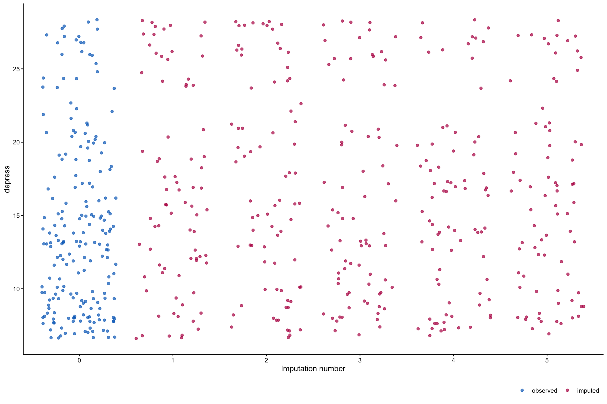
Maximum Likelihood (ML)
ML
Finds most probable parameter estimates given the observed data
Each observation contributes whatever data it has
No imputation performed
How ML uses partial data
No values are filled in. The correlation structure implies what missing values probably look like, without writing a number into any empty cell.

Chronic pain illustration
Low perceived control = more likely to have missing depression (MAR)
True means are both 20

Deleting incomplete information
Deletion gives a non-representative sample
Control mean too high (23.1), depression mean too low (17.2)

Partial data
- Partial data records primarily have low perceived control scores

Adjusting perceived control
- Low control scores increase variability, pull the mean downward

How ML infers missing values
- Multivariate normality + negative correlation: low control implies high depression

Adjusting Depression Distribution
- Depression mean and variance increase to accommodate the implied high scores
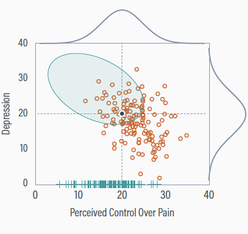
ML: Cons
Limited to normal data; mixed metric options are less common
Biased with interactions and non-linear terms
MLM software often discards observations with missing predictors
A note on hierarchical models
HLMs handle unbalanced designs gracefully (ragged longitudinal data)
Often confused with handling missing data, but HLMs still assume MAR
If dropout depends on the outcome (NMAR), HLMs are biased too
Distinguish between NMAR and MAR
It’s genuinely difficult
- Not many good techniques
Strategies to convert NMAR to MAR:
- Track down the missing data
- Find auxiliary variables
- Collect more data explaining missingness
Distinguish between NMAR and MAR
Bayesian Methods
Without Missing Data
- y_i ~ Normal(α + βx_i, σ²)
- α ~ Normal(0, 10)
- β ~ Normal(0, 1)
- σ ~ HalfCauchy(0, 5)
With Missing Data
- y_i ~ Normal(α + βx_i, σ²)
- x_i ~ Normal(μx, τ²) for missing x_i
- α ~ Normal(0, 10)
- β ~ Normal(0, 1)
- σ ~ HalfCauchy(0, 5)
- μx ~ Normal(0, 10)
- τ ~ HalfCauchy(0, 5)
Reporting Missing Data
- Template from Stef van Buuren
Tip
The percentage of missing values across the nine variables varied between 0 and 34%. In total 1601 out of 3801 records (42%) were incomplete. Many girls had no score because the nurse felt that the measurement was “unnecessary,” or because the girl did not give permission. Older girls had many more missing data. We used multiple imputation to create and analyze 40 multiply imputed datasets. Methodologists currently regard multiple imputation as a state-of-the-art technique because it improves accuracy and statistical power relative to other missing data techniques. Incomplete variables were imputed under fully conditional specification, using the default settings of the mice 3.0 package (Van Buuren and Groothuis-Oudshoorn 2011). The parameters of substantive interest were estimated in each imputed dataset separately, and combined using Rubin’s rules. For comparison, we also performed the analysis on the subset of complete cases.
What to report
- Amount of missing data (overall and per variable)
- Reasons for missingness
- Consequences (assumed mechanism and why)
- Method (MI, ML, Bayesian, etc.)
- Imputation model (variables, method)
- Pooling (Rubin’s rules, etc.)
- Software (package versions)
- Complete-case analysis (sensitivity check)
Is it MCAR, MAR, NMAR?
The post-experiment manipulation-check questionnaires for five participants were accidentally thrown away.
- MCAR – accidental, unrelated to any variable
Is it MCAR, MAR, NMAR?
In a 2-day memory experiment, people who know they would do poorly on the memory test are discouraged and don’t want to return for the second session
- NMAR – missingness depends on the unobserved memory scores
Is it MCAR, MAR, NMAR?
A health psychologist is surveying high school students on marijuana use. Students who scored highly on anxiety left these questions blank.
- MAR – missingness depends on anxiety, an observed variable
Wrap up
When you have missing data, think about why they are missing
Missing data handled improperly can bias your estimates
MI and ML are good ways to handle missing data!
Bayesian methods are good too :)
Inverse probability weighting seem to work well (Gomila and Clark 2022)
Always report your missing data strategy transparently
PSY 504: Advanced Statistics